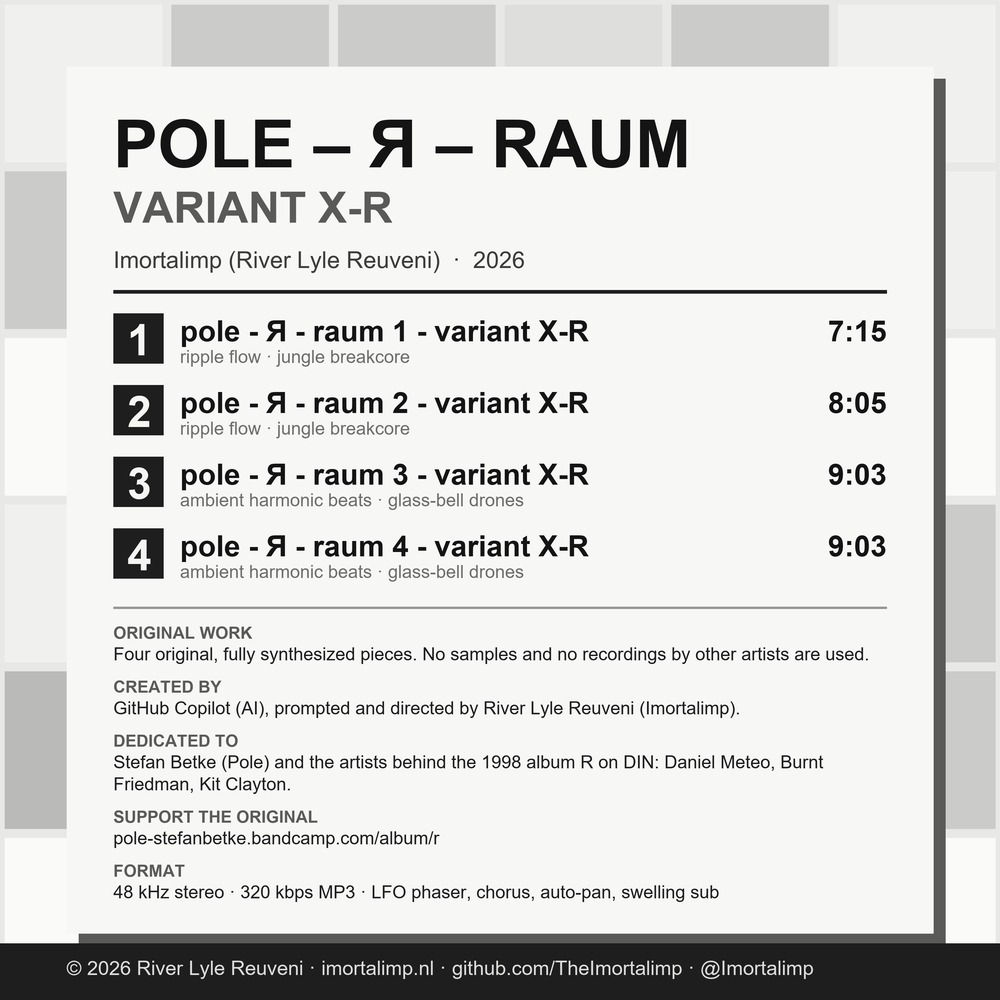

Pole - Я - Raum 1, 2, 3 & 4 - variant X-R are original, fully synthesized works with no sampled audio. They are dedicated to Stefan Betke (Pole) and the artists behind the 1998 album R on DIN — Daniel Meteo, Burnt Friedman and Kit Clayton — whose Raum compositions inspired them.
Created by GitHub Copilot (AI) as an original work, prompted and directed by River Lyle Reuveni (Imortalimp). Not affiliated with Stefan Betke, Pole, DIN or the artists named above; no recordings by them are used.
If you enjoy the original album, please support it: pole-stefanbetke.bandcamp.com/album/r